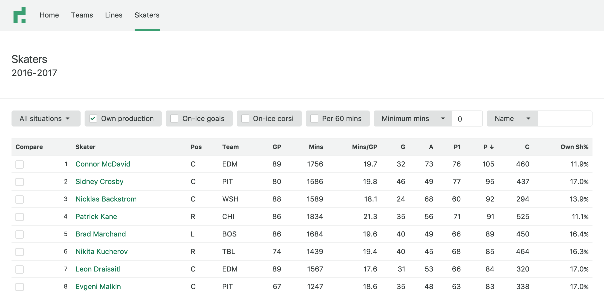
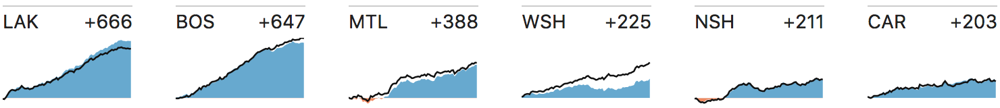
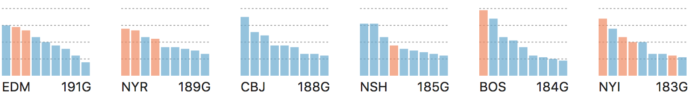
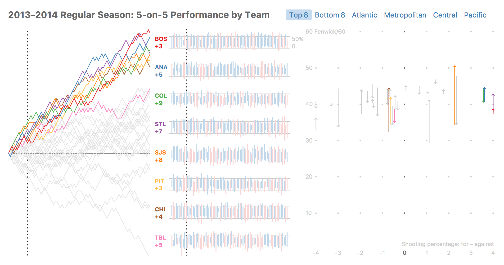
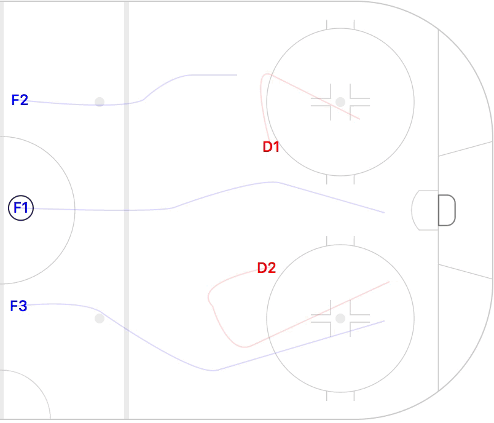

Hockey Data Visualization
Kevin Kan,
kan.kevin@gmail.com

datarink.com is a fast, polished, and responsive web application with team and player dashboards, and easy-to-use player comparisons.
Built with Vue.js, Express.js, and PostgreSQL

A static visualization of teams' shot differentials for the 2015-2016 regular season.
Built with d3.js

A static visualization of how teams' goal-scoring was distributed amongst players for the 2015-2016 regular season.
Built with d3.js

An interactive report of teams' performance during the 2013-2014 regular season.
Built with d3.js
An interactive tool for diagramming hockey plays.
Built with d3.js
